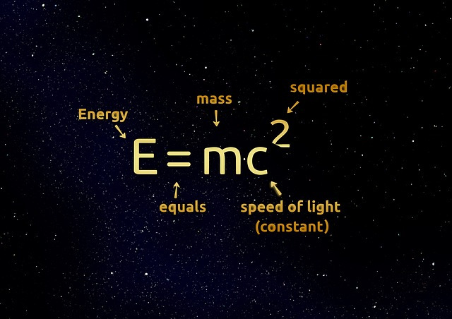
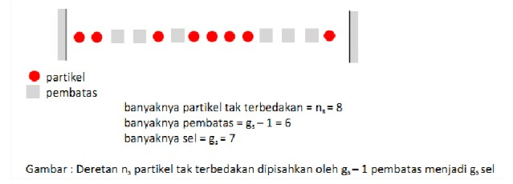
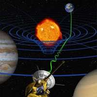

| Tahun | Penghargaan |
|---|---|
| 1921 | Penghargaan Nobel Fisika |
| 1921 | Medali Matteucci |
| 1925 | Medali Copley |
| 1926 | Medali Emas Royal Astronomical Society |
| 1929 | Medali Max Planck |
| 1935 | Medali Franklin |
This responsive page must be resized to see the effect!
Some text about the this photo and with the description. FILL THIIIISS!!!...
Change page to some other link or other page.
1. Einstein menunjukkan bahwa waktu absolut harus diganti dengan absolut baru: kecepatan cahaya. Einstein menentang arus dan benar-benar menolak "Fisika Lama." Dia membayangkan sebuah dunia di mana ruang dan waktu adalah relatif dan kecepatan cahaya adalah absolut (pada saat itu, diyakini bahwa ruang dan waktu mutlak dan kecepatan cahaya relatif).
2. Dia menegaskan kesetaraan massa dan energi, yang akan mengarah pada rumus terkenal E=mc2
3. Einstein menentang teori gelombang cahaya, dia menunjukkan bahwa cahaya juga bisa dianggap sebagai kumpulan partikel. Ini membantu membuka pintu ke dunia yang sama sekali baru - yaitu fisika kuantum. Untuk gagasan dalam makalah ini, ia memenangkan Hadiah Nobel pada tahun 1921. Makalahnya tentang gerakan partikel Brown. Dengan wawasan mendalam, Einstein memadukan ide-ide dari teori kinetik dan hidrodinamika klasik untuk mendapatkan persamaan untuk jalur bebas rata-rata partikel seperti fungsi waktu.
4. Pada tahun 1910, Einstein menjawab pertanyaan dasar: 'Mengapa langit biru?' Makalahnya tentang fenomena yang disebut opalescence kritis menyelesaikan masalah dengan memeriksa efek kumulatif dari hamburan cahaya oleh molekul individu di atmosfer.
5. Einstein kemudian menerbitkan sebuah makalah pada tahun 1915 yang disebut "Relativitas Umum." Relativitas Umum mengambil alih ketika Relativitas Khusus mulai gagal. Kontroversi mulai meningkat ketika Einstein merilis makalah keduanya yang disebut "Relativitas Umum."
6. Pada tahun 1917, Einstein menerbitkan sebuah makalah yang menggunakan relativitas umum untuk memodelkan perilaku seluruh alam semesta. Relativitas umum telah melahirkan beberapa hasil yang paling aneh, dan paling penting dalam astronomi modern.
7. Antara tahun 1905 dan 1925, Einstein mengubah pemahaman manusia tentang alam pada setiap skala, dari yang terkecil ke kosmos secara keseluruhan.
8. Pada tahun 1924, Einstein menerima kertas pendek dari seorang fisikawan India muda bernama Satyendra Nath Bose, menggambarkan cahaya sebagai gas foton, dan meminta bantuan Einstein dalam publikasi. Einstein menyadari bahwa statistik yang sama dapat diterapkan pada atom, dan menerbitkan sebuah artikel dalam bahasa Jerman (kemudian lingua franca fisika) yang menggambarkan model Bose dan menjelaskan implikasinya. Statistik Bose Einstein sekarang menggambarkan kumpulan partikel yang tidak bisa dibedakan ini yang dikenal sebagai boson.
9. Einstein dan de Sitter pada 1932 mengusulkan solusi sederhana persamaan medan relativitas umum untuk alam semesta yang mengembang. Mereka berpendapat bahwa mungkin ada sejumlah besar materi yang tidak memancarkan cahaya dan belum terdeteksi. Materi ini, sekarang disebut 'materi gelap', sejak itu telah terbukti ada dengan mengamati efek gravitasi.
| Tahun | Penghargaan |
|---|---|
| 1921 | Penghargaan Nobel Fisika |
| 1921 | Medali Matteucci |
| 1925 | Medali Copley |
| 1926 | Medali Emas Royal Astronomical Society |
| 1929 | Medali Max Planck |
| 1935 | Medali Franklin |